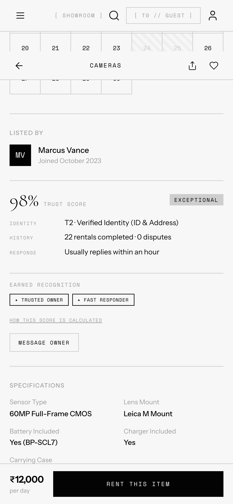
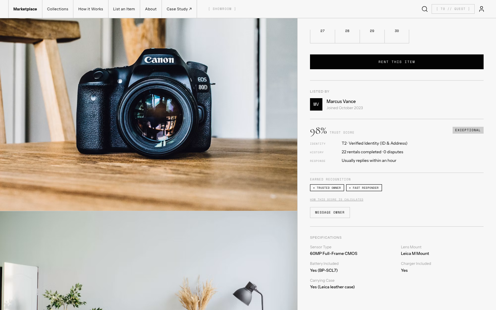

Four screens, built for specific decisions.
Each screen in this prototype answers a specific product decision. None of them are padding.
Marketplace Home
Tier 0 in practice: unrestricted access, no sign-in required. Trust is built through specific facts, rental history and response times, not generic rating badges.


Item Details
The decision point. Verification is introduced here, keeping everything before it frictionless.


Verification Gate
A reusable component across all three tiers, so users learn one pattern regardless of what they are verifying. Tier 2 triggers at the point of publishing, not at the point of creating a listing. That lets owners write and edit before they are asked to verify.


Identity Verification
Capture, failure, processing, and success are states within a single flow, not separate screens. High-value listings use the same gate with escalated prompts and checks for Tier 3. There is no separate review page because the gate handles the escalation itself.


Owner Trust Profile
A transparent trust panel visible directly on the Item Details sidebar. This consolidates identity verification status, historical rental metrics, and earned behavioral badges into a single, explainable Trust Score. Users can expand the score details to inspect the direct contributing factors, ensuring the platform's trust evaluation remains completely open and non-opaque.

